White Christmas decor has one failure mode. It goes flat, then it goes cold, and by mid-December the room looks like a showroom nobody lives in.
The fix is never more white. It is more texture, warmer bulbs, and one dark thing for the eye to rest on. Get those three right and white reads as snow and candlelight instead of a hospital.
These 27 ideas run from the tree to the gift wrap. The rules first, because the bulb temperature and the texture count apply to every one of them.
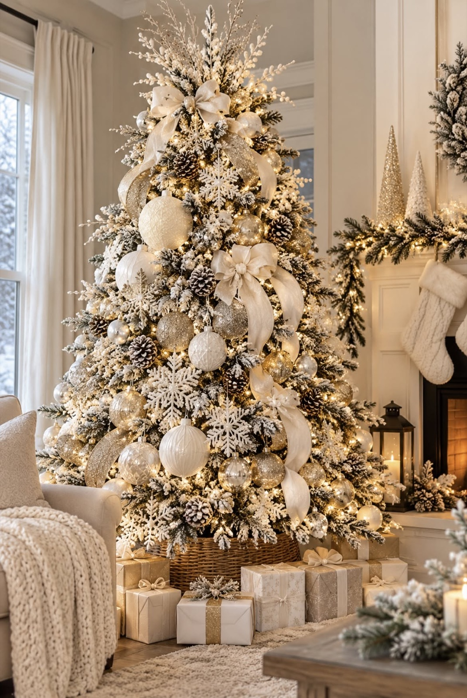
Five Rules for White Decor That Stays Warm
- Warm white or cool white, never both in one room. Cream beside icy white looks like a mistake. Pick a family per room and match the bulbs to it.
- Three textures in every view. Velvet, feather, glass, knit, flocked branch, raw wood. A single color only works when the surfaces differ.
- One dark anchor per arrangement. Fresh greenery, a wood table or black iron gives white something to stand against. All-white on white disappears.
- 2700K bulbs and warm white strings. Cool white light turns cream a sickly blue. The number is on the box. Check it.
- Keep a lint roller in the room. White shows every fleck. A lint roller for fabric and a microfiber cloth for glass, five minutes before guests arrive.
White Trees and Ornaments
1. Vary the Texture, Not the Color
White ornaments vanish on a green tree if they are all the same finish. Mix pearl-beaded, etched and clear glass in one size range, as on this tree, and they read as a set with depth.
Hang the largest deep toward the trunk and the smallest at the branch tips. The tree gets dimension and the lights show through the clear ones.
Glass is the right call for texture and the wrong call for a house with a toddler or a cat. Shatterproof pearl and matte finishes get most of the way there.
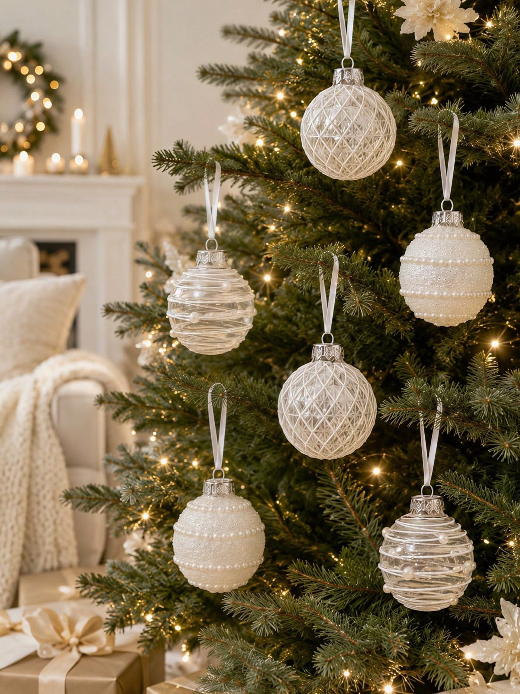
2. Tuck the Ribbon In, Do Not Wrap It
Ribbon wrapped around a tree looks like a maypole. Ribbon tucked into the branches in loops from the top down, as on this tree with white bows, looks like it fell there.
Use wired ribbon about two and a half inches wide and plan on ten yards for a seven-foot tree. Anchor each loop with a twist of floral wire, and add the bows last.
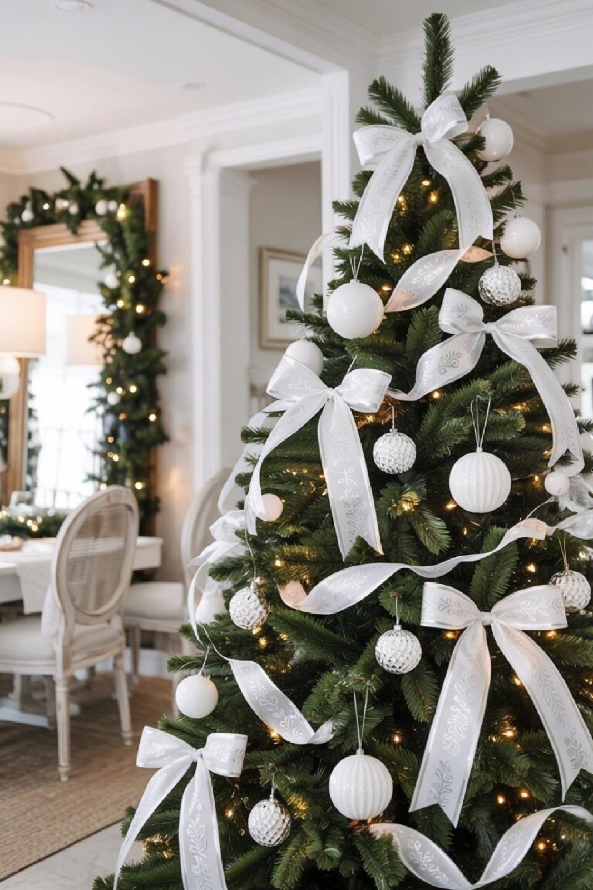
3. Keep Flocked Tree Ornaments in Champagne
A flocked tree is already white. White ornaments on it disappear. Champagne, cream and silver, as on this tree, give the eye something to find.
Oversized snowflakes and a sheer ribbon add scale without adding color.
Flocking sheds for the whole season. A washable mat under the base, and a vacuum with the brush attachment, not the beater bar.
Warm white LEDs only. A flocked tree under cool white light goes blue in photographs and in person.

Mantels and Stockings
4. Build the Mantel Low and Long
A tall mantel arrangement fights the mirror or art above it. Keep it low and long, with one large bloom in the middle and silver balls and pinecones fanning out either side, as this white poinsettia does under a round mirror.
Floral foam in a shallow tray holds the stems where you put them.
Flocked branches burn. The two pillar candles at the ends of this mantel should be flameless, and on any mantel with flocking the real ones go elsewhere.
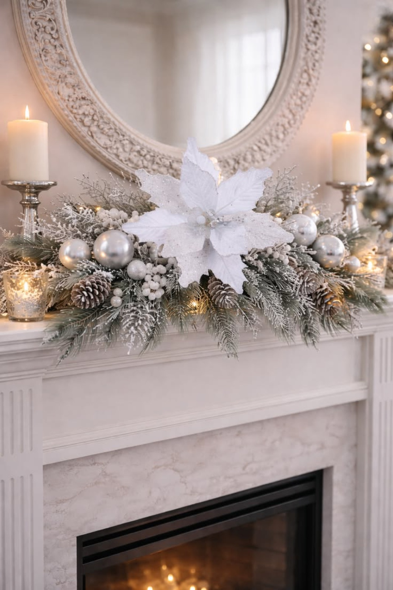
5. Weigh the Stocking Before You Pick the Holder
Glitter stockings carry the mantel on their own, so the garland behind them stays plain: frosted, with a few silver balls, as here.
A filled stocking weighs four or five pounds. Buy weighted holders rated for that, and test one with a bag of flour before Christmas Eve. On a thin mantel shelf, a holder that grips the edge beats one that only sits.
6. Embroider the Names
Natural linen reads as heirloom where glitter reads as craft store. Embroidered names, as on these Mom and Dad stockings, are what make people keep them.
Linen wrinkles in the box. Steam each stocking on low before it goes up, and clip it to the mantel with a holder rather than tying it.
The fresh pine above these stockings is the dark anchor this all-cream mantel needs.
7. Use Wood to Warm a White Mantel
An all-white mantel needs one warm material, and natural wood nutcrackers, as these three under a flocked wreath, supply it without adding a color.
Group in odd numbers and three heights.
Let a flocked garland run behind them and hang the ends over the edges of the mantel. Cut-off ends look unfinished.
Removable hooks under the mantel lip hold the garland. The nutcrackers stand on their own bases, so nothing is glued.
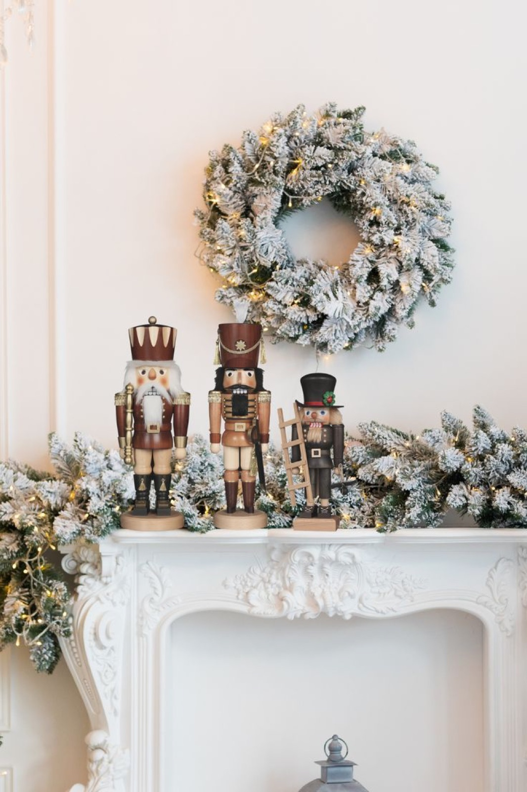
Consoles, Shelves and Coffee Tables
8. Add Fluff Where White Goes Flat
A feather or faux fur garland is pure texture, which is exactly what a white console lacks. Drape it loosely along the front edge and let one end hang lower than the other, as this one does.
Tuck the ends behind a vase so they do not look cut, and put a mercury glass votive beside it to bounce the light into the fibers.
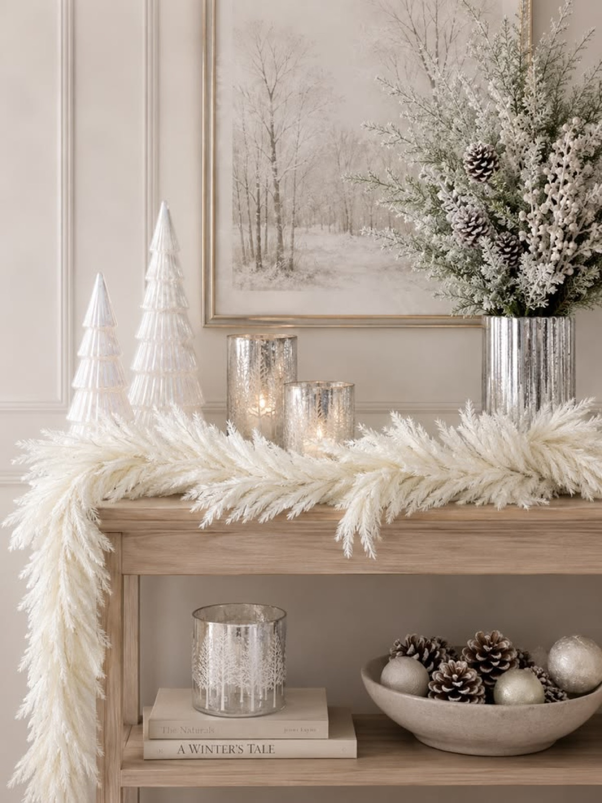
9. Make Snow From Quilt Batting
A roll of quilt batting is the cheapest snow there is. Pull it into long mounds along the console, set the white houses in it and push bottle brush trees between them, as here under a round mirror.
Batting catches fire easily. The houses are lit with LED tealights, and nothing with a flame goes on this table.
Pull the batting rather than cutting it. Torn edges look like snow. Scissored edges look like fabric.
10. Weigh the Vase Before the Branches Go In
Tall branches in a light vase go over the first time someone brushes past. Pour sand or pebbles into the vase first, then the branches.
Cut stems 24 to 36 inches, spray them white, and weave battery micro lights through them, as these frosted branches in a mercury glass vase have.
The silver balls on the console beside the vase, as in this photo, repeat the finish and tie the two together.
Hide the battery pack inside the vase under the sand. A pack on the console is the first thing the eye finds.
11. Hang Ornaments With Clear Line
Ornaments hung from white branches on clear fishing line look like they float, as on these lit branches in a glass vase. Ribbon would show.
Keep each ornament under two inches across so the branches do not bend, and drop a few spare ornaments into the vase to hide the battery pack.
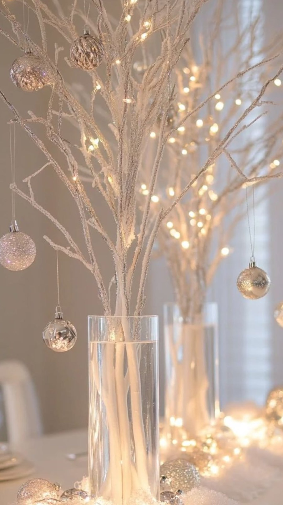
12. Contain the Coffee Table on a Tray
A coffee table scene without a tray spreads across the whole surface within a day. A round tray, as here, keeps three cream trees, a candle and a stack of two books in one piece that can be lifted when the table is needed.
Odd numbers, one candle, one sprig of greenery. That is the limit on a coffee table, because anything taller blocks the view to the sofa opposite.
The books are not decoration. They are the risers that give the trees three heights.
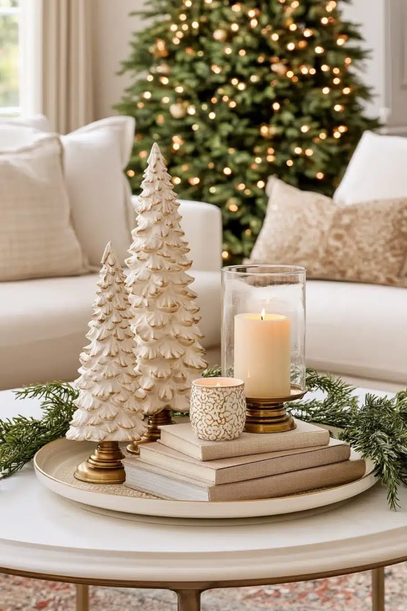
13. Give the Candles a Knit Runner
Candles straight on a wood table look like a shop display. On a chunky knit runner, as here, they look like winter.
Three pillars of different heights on wooden holders, a pair of white reindeer around 8 to 10 inches tall, a few pine sprigs and pinecones. Keep any flame a foot from the pine, or use flameless pillars and skip the worry.
14. Repeat One Shape
White nutcrackers and bottle brush trees are both tall and narrow, so on this wooden sideboard they read as one collection rather than two kinds of thing.
One gold tree among the cream ones is the warm note, and a battery fairy-light strand along the base lights them from below.
A runner under everything protects the wood. White figurines have unglazed bases that scratch.
The fresh greenery hung above is the anchor. Without it this is a shelf of white on brown.
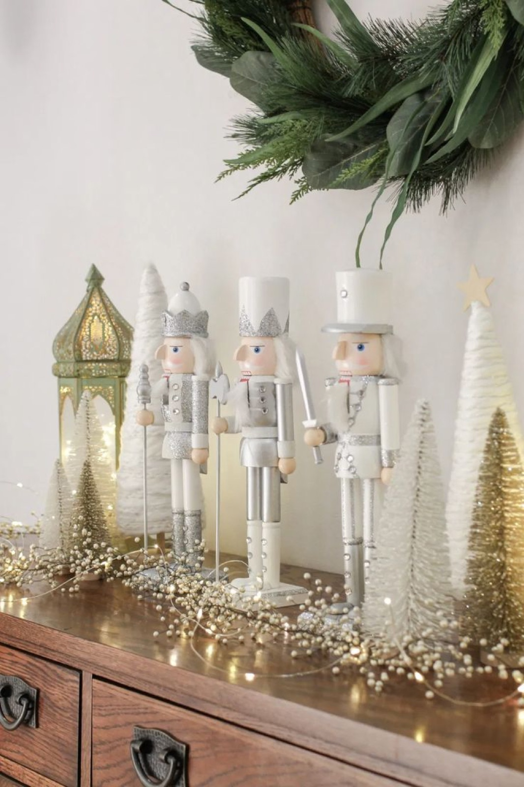
Stairs, Doors and Windows
15. Buy the Garland Longer Than the Rail
A garland draped along a banister uses more length than the rail measures. Buy a third more than the railing, or it ends short of the bottom post.
Fasten every 12 to 18 inches with floral wire or zip ties, then fluff it out after it is up, as this frosted silver garland on a white rail has been.
Silver-blue frost keeps the palette cool without going cold, because the wood treads underneath supply the warmth.
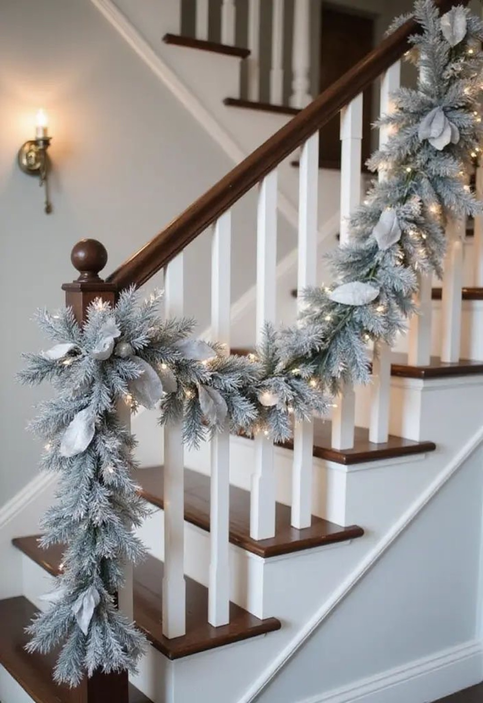
16. Hang Swags Instead of a Garland
A full garland on a staircase costs a lot and hides the rail. Two swags, one at the newel post and one partway up, as on these stairs, look lighter and cost a third as much.
Silver balls, pinecones and white poinsettias keep the swags in the palette. Clip each swag to the rail with a wired tie so it does not slide down the spindles.
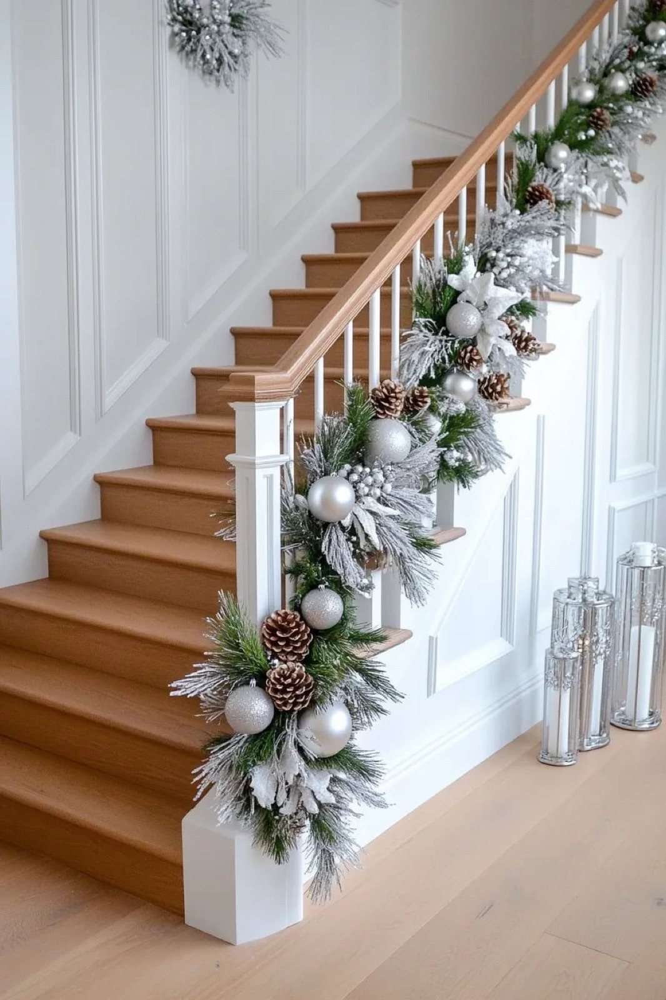
17. Loop Paper Stars Onto the Greenery
Paper star lanterns weigh almost nothing, so a loop of twine around the garland holds them, as these white and ivory stars hang from a cedar banister.
Use two sizes. One size in a row looks like bunting.
Paper warps in damp air. These stay indoors, and away from the bathroom door.
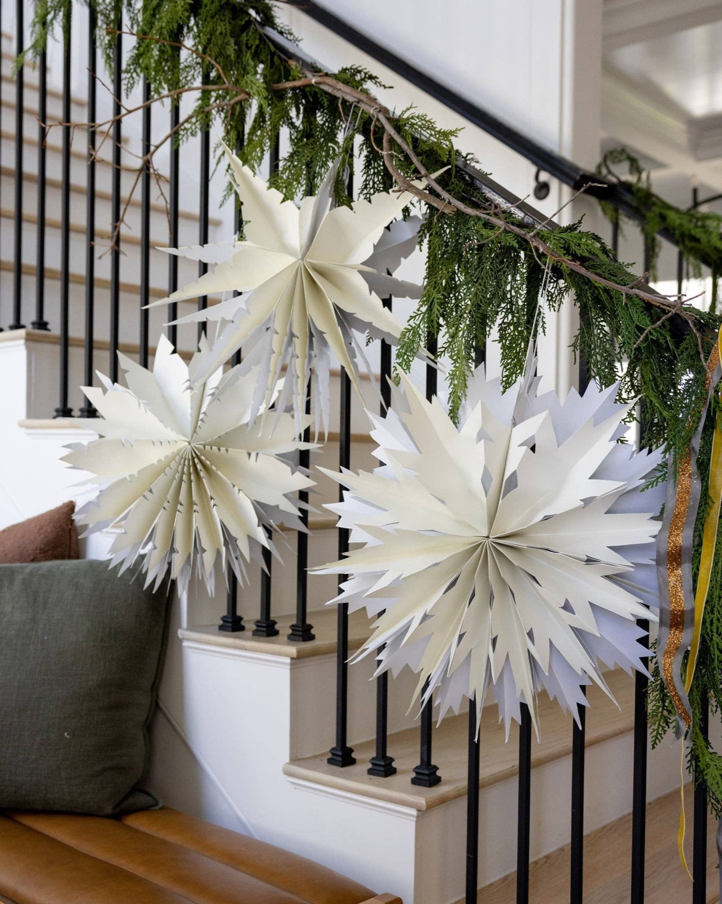
18. Hang the Wreath Without a Nail
An over-the-door hanger holds a 24-inch wreath with nothing drilled into the wood. On a standard door, as this dark one, 22 to 24 inches covers about two-thirds of the width, which is the right proportion.
A frosted wreath with silver balls and white antlers, as here, is the only decoration a dark wood door needs. The door is the anchor.
Check the hanger clears the door frame when the door closes. Thick hangers scrape.
A white wreath on a white door disappears. Save this one for wood or a dark paint.
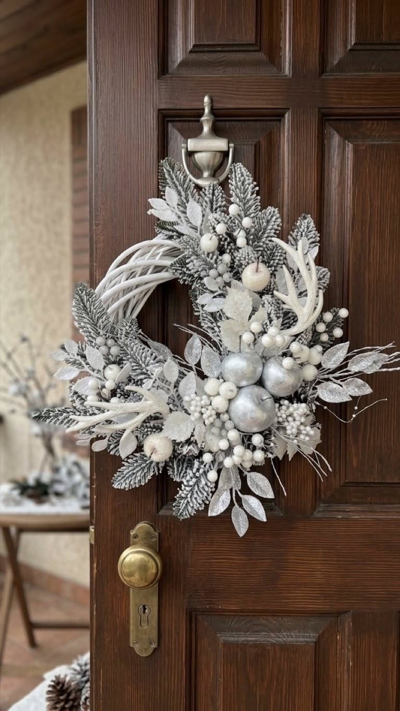
19. Put the Lantern on a Timer
An outdoor lantern only works if it is lit when people arrive. An LED candle with a dusk timer, inside this white lantern on a post, comes on every evening without anyone going outside.
Hang it at eye level on a bracket rated for the weight, and choose a lantern with a closed top. This one has a roof, which is why the snow on the post has not reached the candle.
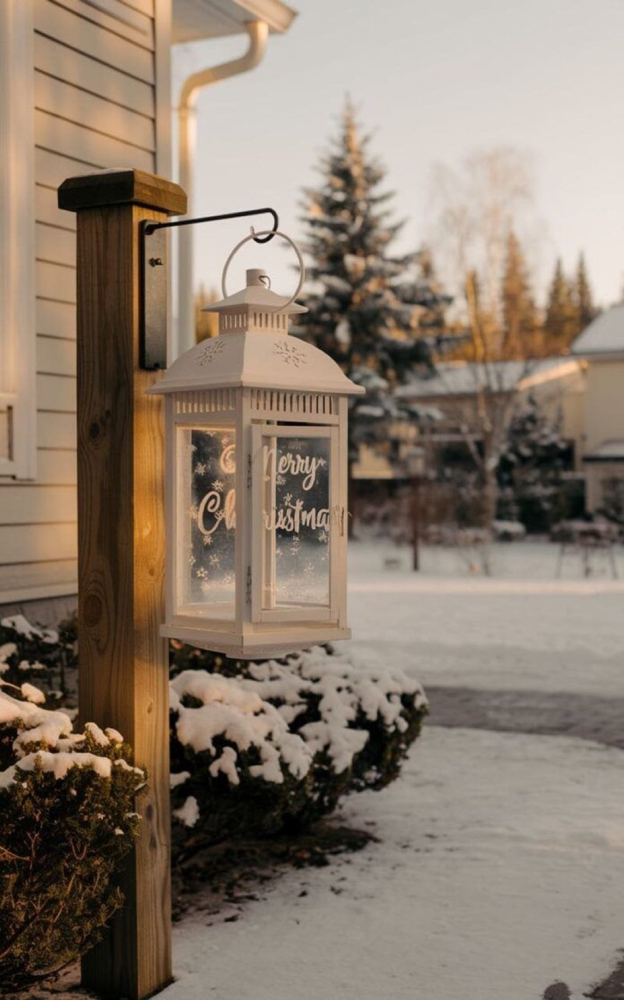
20. Put the Sill Scene on a Tray
Cold glass sweats in a warm room, and the water runs onto the sill. Build the cotton snow, houses and trees on a tray first, as this windowsill village should be, and the wood underneath stays dry.
Battery lights only on a sill. The houses here glow from inside, and nothing trails to an outlet.
Keep the snow a finger's width back from the glass so it does not wick the condensation.
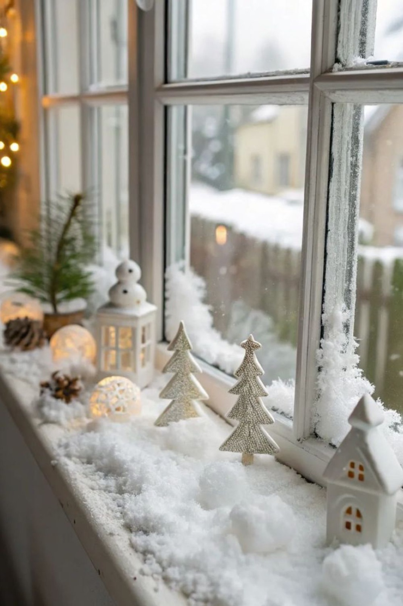
21. Stake the Branch Trees
Lit branch trees give a front yard a snowy glow with no ladder. Two of them, as in front of this white house, light the whole approach.
Outdoor-rated lights and cords, warm white, staked into the ground and plugged into a timer. A branch tree with no stake lies down in the first wind.
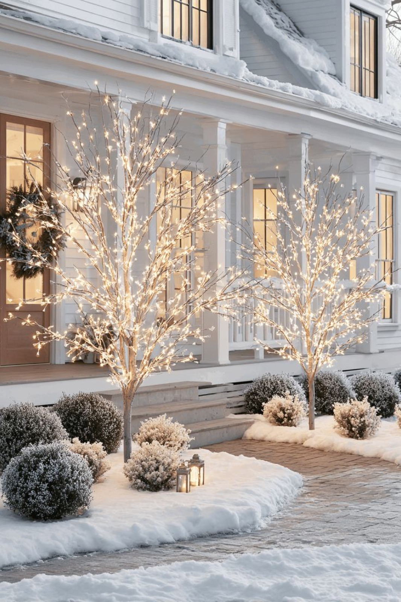
Tables, Gifts and the Bedroom
22. Let the Candles Do the Work
A white runner and a low strip of greenery is a calm table. The candles are what make it a Christmas table.
Three glass hurricanes at least eight inches tall, in a row down the greenery, as here, with a few mercury votives between them.
Unscented candles only. A pine candle at a dinner table fights the food.
Keep the hurricanes an inch above the greenery. Glass gets hot, and dry pine is right underneath.
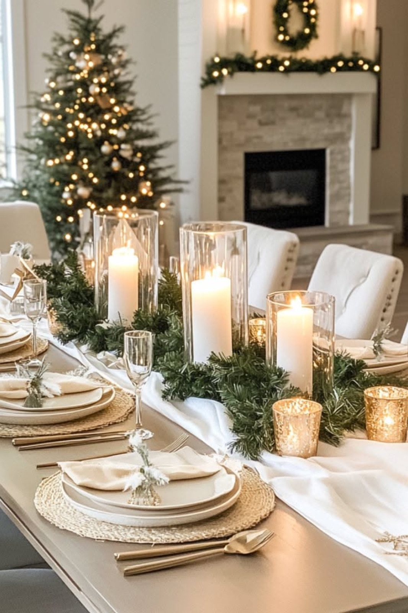
23. Go Tall Only With Thin Candlesticks
The rule is to keep a centerpiece under 12 inches, and tall glass candlesticks are the exception, because guests see between them, as they can across this silver table.
Mix three heights down the middle with a silver garland lying low between them.
Glass candlesticks are top-heavy. Set them on the runner, not a loose cloth, so a tug does not take the whole row over.
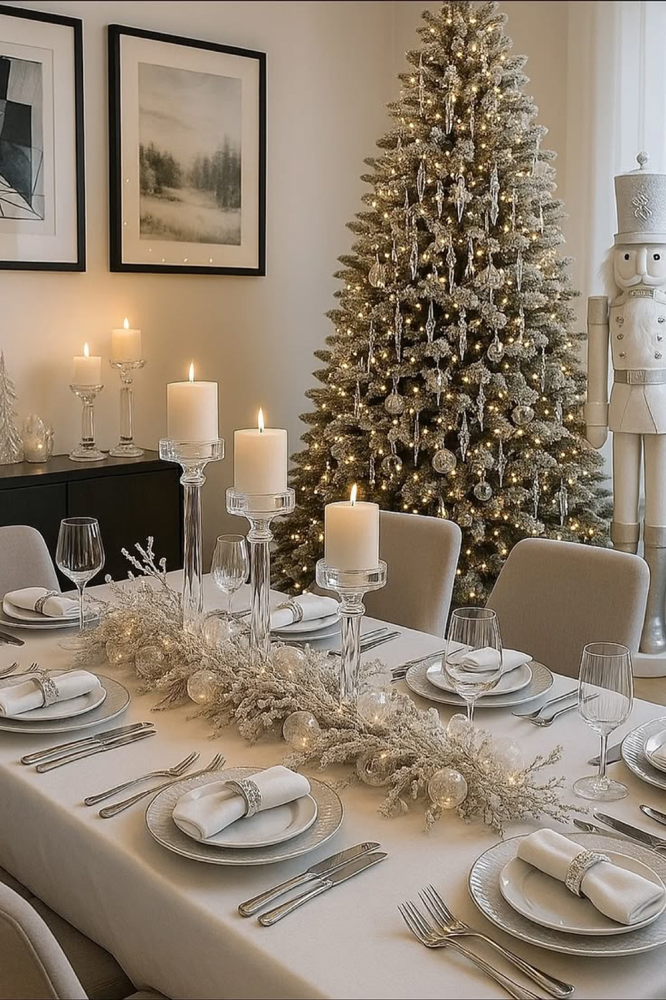
24. Build the House a Day Before You Decorate It
A white gingerbread house, as this one with silver trees, is a centerpiece on its own. Royal icing takes a full day to set hard, so build the walls on one day and pipe the details the next.
Keep it away from steam, which softens the walls, and treat it as decoration. After a week on the table it is not food.
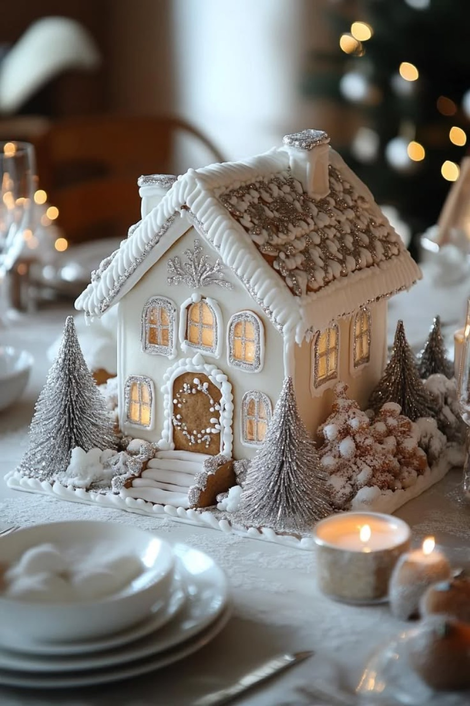
25. Choose a Bedroom Tree You Can See Past
A slim pre-lit tree around six feet tall, as the flocked one beside this bed, changes a bedroom without eating the floor.
Put the lights on a timer that goes off at bedtime. A tree glowing at 2 a.m. is not restful.
A faux fur throw over the white bedding and gold pillows are the textures that keep this room from reading as a hotel.
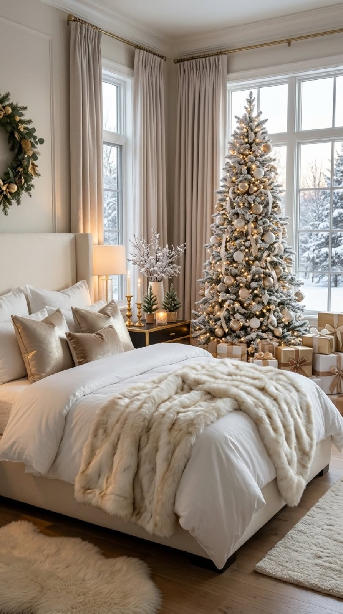
26. Three Papers, One Twine
Kraft, a white print and grey dots, as these gifts are wrapped, all sit in one palette, and the same twine on every box holds them together.
A paper snowflake on one, a small bell on another. That is enough decoration.
Keep one stack of kraft tags beside the paper so every gift gets the same label.
Grey dots are the dark anchor here. Without them the stack is cream on cream.
27. Tie the Sprig On, Never Glue It
Wrap every gift in the same ivory paper and change only the detail: a dried twig sprig and a small silver ornament in the bow, as on these boxes.
Tie the sprig on with the ribbon so it comes off without tearing the paper. Spray the twigs white or leave them natural. Both work on ivory.
Common Mistakes (and Fixes)
- Mistake: cool white and warm cream in the same room. Fix: pick one family per room, and buy bulbs to match it.
- Mistake: every surface glossy. Fix: add velvet, feather, knit and raw wood so the white has shadows.
- Mistake: real candles beside flocked branches. Fix: flameless candles near anything flocked or dried. Flocking is paper fiber and it burns.
- Mistake: so much silver the room feels like a freezer. Fix: balance silver with gold, wood or fresh green.
- Mistake: a heavy wreath or garland on thin wire. Fix: check the weight, and use an over-the-door hanger or rated hooks.
Where to Start
Nobody needs all 27. Choose one focal point, the tree or the mantel, and repeat its palette in two or three smaller spots.
White works when it is edited. Warm bulbs and one dark anchor do more for the room than another box of ornaments.